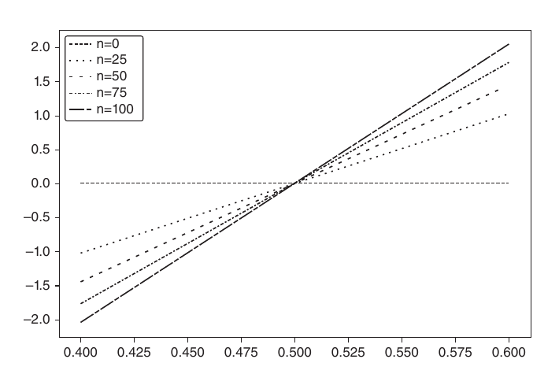
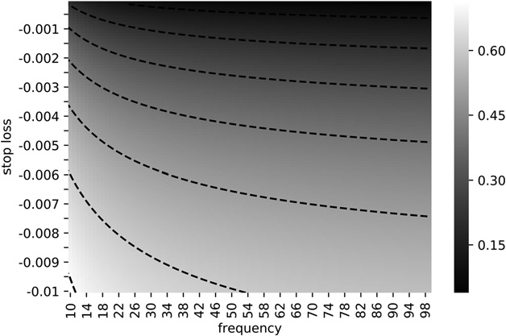
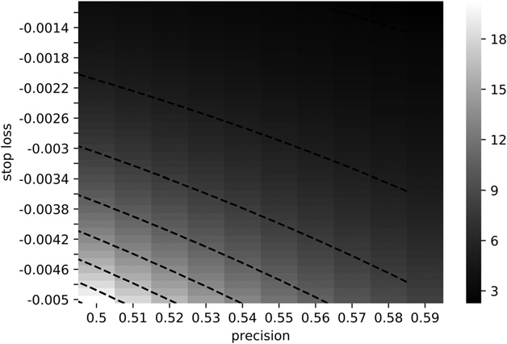

第三部分：回测
理解策略风险
15.1 动机
如第3章和第13章所述，投资策略通常以持有头寸的方式实施，直至满足以下两个条件之一：（1）达到止盈条件，平仓获利；（2）达到止损条件，平仓认亏。即便某策略未明确设定止损，也始终存在一个隐性止损限额——届时投资者将无法继续为其头寸融资（触发追加保证金通知），或无力承受持续扩大的浮亏所带来的痛苦。由于大多数策略（隐性或显性地）具备上述两种退出条件，因此通过二项过程对结果分布进行建模是合理的。这将有助于我们理解哪些下注频率、赔率与赔付组合在经济上是不可行的。本章的目标是帮助读者评估策略在哪些情形下对上述任一变量的微小变化具有脆弱性。
15.2 对称收益
考虑一个每年产生 \(n\) IID 次下注的策略，其中 \(X_i\) 某次下注 \(i\in[1,n]\) 的结果为盈利 \(\pi>0\) 的概率为 \(P[X_i=\pi]=p\)，以及亏损 \(-\pi\) 的概率为 \(P[X_i=-\pi]=1-p\)。可以将 \(p\) 理解为二分类器的精确率，其中正类表示对某个机会下注，负类表示放弃某个机会：True 正例获得奖励，假正例受到惩罚，而负例（无论真假）均无收益。由于下注结果 \(\{X_i\}_{i=1,\ldots,n}\) 相互独立，我们将计算每次下注的期望矩。单次下注的期望收益为 \(\mathbb{E}[X_i]=\pi p+(-\pi)(1-p)=\pi(2p-1)\)。方差为 \(\mathbb{V}[X_i]=\mathbb{E}[X_i^2]-\mathbb{E}[X_i]^2\)，其中 \(\mathbb{E}[X_i^2]=\pi^2p+(-\pi)^2(1-p)=\pi^2\)时保持不变，因此
\(\mathbb{V}[X_i]=\pi^2-\pi^2(2p-1)^2=\pi^2[1-(2p-1)^2]=4\pi^2p(1-p)\)。对于 \(n\) IID 次下注/年，年化夏普比率 \((\theta)\) 为
注意 \(\pi\) 在上式中消去，因为收益是对称的。与高斯情形一样， \(\theta[p,n]\) 可以理解为经过重新缩放的 t 值。这说明，即使对于较小的 \(p>\frac{1}{2}\)，对于足够大的 \(n\)，夏普比率也可以做到很高。这正是高频交易的经济基础，其中 \(p\) 可以仅略高于 0.5，成功业务的关键在于增加 \(n\)。夏普比率是精确率而非准确率的函数，因为放弃机会（负类）不会直接获得奖励或惩罚（尽管过多的负类可能导致较小的 \(n\)，从而使夏普比率趋近于零）。
例如，对于 \(p=.55\), \(\frac{2p-1}{2\sqrt{p(1-p)}}=0.1005\)，要实现年化夏普比率为 2，每年需要 396 次下注。代码清单 15.1 通过实验验证了该结果。图 15.1 描绘了在不同下注频率下，夏普比率关于精度的函数关系。

out,p=[],.55
for i in xrange(1000000):
rnd=np.random.binomial(n=1,p=p)
x=(1 if rnd==1 else -1)
out.append(x)
print np.mean(out),np.std(out),np.mean(out)/np.std(out)对其求解， \(0\le p\le1\)时，可得 \(-4p^2+4p-\frac{n}{\theta^2+n}=0\)，其解为
该方程明确揭示了精度 \((p)\) 与频率 \((n)\) 在给定夏普比率下的权衡关系 \((\theta)\)。例如，仅每周下注一次的策略 \((n=52)\) 将需要相当高的精度 \(p=0.6336\) 才能实现年化夏普比率为 2。
15.3 非对称收益
考虑一个每年产生 \(n\) IID 次下注的策略，其中 \(X_i\) 某次下注 \(i\in[1,n]\) 为 \(\pi_+\) 的概率为 \(P[X_i=\pi_+]=p\)，以及结果 \(\pi_-\), \(\pi_-<\pi_+\) 以概率 \(P[X_i=\pi_-]=1-p\)发生。单次下注的期望利润为 \(\mathbb{E}[X_i]=p\pi_++(1-p)\pi_-=(\pi_+-\pi_-)p+\pi_-\)。方差为 \(\mathbb{V}[X_i]=\mathbb{E}[X_i^2]-\mathbb{E}[X_i]^2\)，其中 \(\mathbb{E}[X_i^2]=p\pi_+^2+(1-p)\pi_-^2=(\pi_+^2-\pi_-^2)p+\pi_-^2\)时保持不变，因此 \(\mathbb{V}[X_i]=(\pi_+-\pi_-)^2p(1-p)\)。对于 \(n\) IID 次下注/年，年化夏普比率 \((\theta)\) 为
而对于 \(\pi_-=-\pi_+\) 的情形，可以看出该方程化简为对称情形：
例如，对于 \(n=260\), \(\pi_-=-.01\), \(\pi_+=.005\), \(p=.7\)，我们得到 \(\theta=1.173\).
最后，我们可以对前述方程求解 \(0\le p\le1\)，得到
其中：
补充说明，代码清单 15.2 使用 SymPy Live 对上述符号运算进行了验证： http://live.sympy.org/.
>>> from sympy import *
>>> init_printing(use_unicode=False,wrap_line=False,no_global=True)
>>> p,u,d=symbols('p u d')
>>> m2=p*u**2+(1-p)*d**2
>>> m1=p*u+(1-p)*d
>>> v=m2-m1**2
>>> factor(v)上述方程回答了如下问题：给定一个由参数 \(\{\pi_-,\pi_+,n\}\)刻画的交易规则，其精确率 \(p\) 需要达到多少才能实现夏普比率 \(\theta^*\)？例如，对于 \(n=260\), \(\pi_-=-.01\), \(\pi_+=.005\)，为了获得 \(\theta=2\) 我们需要 \(p=.72\)。由于下注次数众多，精确率极小的变动 \(p\) （从 \(p=.7\) 增加至 \(p=.72\)）已将夏普比率从 \(\theta=1.173\) 增加至 \(\theta=2\)。另一方面，这也说明该策略对精确率的微小变化极为敏感 \(p\)。代码清单 15.3 实现了隐含精确率的推导。图 15.2 展示了隐含精确率关于 \(n\) 和 \(\pi_-\)，其中 \(\pi_+=0.1\) 和 \(\theta^*=1.5\)的函数图像。当 \(\pi_-\) 在给定 \(n\)下变得更负时，需要更高的 \(p\) 才能实现 \(\theta^*\) 在给定 \(\pi_+\)的函数图像。当 \(n\) 下变得更小时 \(\pi_-\)下变得更负时，需要更高的 \(p\) 才能实现 \(\theta^*\) 在给定 \(\pi_+\).

def binHR(sl,pt,freq,tSR):
'''
Given a trading rule characterized by the parameters {sl,pt,freq},
what's the min precision p required to achieve a Sharpe ratio tSR?
1) Inputs
sl: stop loss threshold
pt: profit taking threshold
freq: number of bets per year
tSR: target annual Sharpe ratio
2) Output
p: the min precision rate p required to achieve tSR
'''
a=(freq+tSR**2)*(pt-sl)**2
b=(2*freq*sl-tSR**2*(pt-sl))*(pt-sl)
c=freq*sl**2
p=(-b+(b**2-4*a*c)**.5)/(2.*a)
return p代码清单 15.4 对 \(\theta[p,n,\pi_-,\pi_+]\) 求解隐含下注频率， \(n\)。图 15.3 绘制了隐含频率关于 \(p\) 和 \(\pi_-\)，其中 \(\pi_+=0.1\) 和 \(\theta^*=1.5\)的函数图像。当 \(\pi_-\) 在给定 \(p\)下变得更负时，需要更高的 \(n\) 才能实现 \(\theta^*\) 在给定 \(\pi_+\)的函数图像。当 \(p\) 下变得更小时 \(\pi_-\)下变得更负时，需要更高的 \(n\) 才能实现 \(\theta^*\) 在给定 \(\pi_+\).

def binFreq(sl,pt,p,tSR):
'''
Given a trading rule characterized by the parameters {sl,pt,freq},
what's the number of bets/year needed to achieve a Sharpe ratio
tSR with precision rate p?
Note: Equation with radicals, check for extraneous solution.
1) Inputs
sl: stop loss threshold
pt: profit taking threshold
p: precision rate p
tSR: target annual Sharpe ratio
2) Output
freq: number of bets per year needed
'''
freq=(tSR*(pt-sl))**2*p*(1-p)/((pt-sl)*p+sl)**2 # possible extraneous
if not np.isclose(binSR(sl,pt,freq,p),tSR):
return
return freq15.4 策略失败概率
在上述示例中，参数 \(\pi_-=-.01\), \(\pi_+=.005\) 由投资组合经理设定，并随执行指令传达给交易员。参数 \(n=260\) 同样由投资组合经理设定，因为她决定什么构成值得下注的机会。不受投资组合经理控制的两个参数是 \(p\) （由市场决定）和 \(\theta^*\) （由投资者设定的目标）。由于 \(p\) 是未知的，我们可以将其建模为随机变量，期望值为 \(\mathbb{E}[p]\)。让我们定义 \(p_{\theta^*}\) 为 \(p\) 低于该值时策略将无法达到目标夏普比率 \(\theta^*\)的值，即， \(p_{\theta^*}=\max\{p\mid\theta\le\theta^*\}\)。我们可以使用上述方程（或 binHR 函数）得出，对于 \(p_{\theta^*=0}=\frac{2}{3}\), \(p<p_{\theta^*=0}\Rightarrow\theta\le0\).
这凸显了该策略所涉及的风险，因为 \(p\) （从 \(p=.7\) 增加至 \(p=.67\)）的相对小幅下降将会抹去所有利润。即便持仓本身并无风险，该策略本质上仍是高风险的。这正是我们希望通过本章建立的核心区别：策略风险不应与投资组合风险相混淆。大多数公司和投资者在计算、监控和报告投资组合风险时，并未意识到这对于策略本身的风险毫无说明。策略风险并非首席风险官所计算的底层投资组合风险，而是投资策略随时间推移能否成功的风险——这是一个对首席投资官而言重要得多的问题。"该策略失败的概率是多少？"这一问题的答案，等价于计算 \(P[p<p_{\theta^*}]\)。以下算法将帮助我们计算策略风险。
15.4.1 算法
本节将描述一种计算 \(P[p<p_{\theta^*}]\)的流程。给定一组下注结果的时间序列 \(\{\pi_t\}_{t=1,\ldots,T}\)，首先估计 \(\pi_-=\mathbb{E}[\{\pi_t\mid\pi_t\le0\}_{t=1,\ldots,T}]\)，且 \(\pi_+=\mathbb{E}[\{\pi_t\mid\pi_t>0\}_{t=1,\ldots,T}]\)。另外， \(\{\pi_-,\pi_+\}\) 也可以通过使用 EF3M 算法拟合两个高斯分布的混合模型来推导（López de Prado 和 Foreman [2014]）。其次，年度频率 \(n\) 由下式给出 \(n=\frac{T}{y}\)，其中 \(y\) 为 \(t=1\) 和 \(t=T\)。第三，我们对以下分布进行自助法抽样： \(p\) 的值如下：
- 对于迭代次数 \(i=1,\ldots,I\):
- 抽取 \(\lfloor nk\rfloor\) 个样本，来自 \(\{\pi_t\}_{t=1,\ldots,T}\) ，有放回抽样，其中 \(k\) 为投资者用于评估策略的年数（例如，2年）。将这些抽取样本的集合记为 \(\{\pi_j^{(i)}\}_{j=1,\ldots,\lfloor nk\rfloor}\).
- 从迭代 \(i\) 时计算为 \(p_i=\frac{1}{\lfloor nk\rfloor}\left\|\{\pi_j^{(i)}\mid\pi_j^{(i)}>0\}_{j=1,\ldots,\lfloor nk\rfloor}\right\|\).
- 拟合 \(p\)的，记为 \(f[p]\)，方法是对 \(\{p_i\}_{i=1,\ldots,I}\).
应用核密度估计（）。当 \(k\)足够大时，第三步可近似为 \(f[p]\sim N[\bar p,\bar p(1-\bar p)]\)，其中 \(\bar p=\mathbb{E}[p]=\frac{1}{T}\left\|\{\pi_t^{(i)}\mid\pi_t^{(i)}>0\}_{t=1,\ldots,T}\right\|\)。第四，给定阈值 \(\theta^*\) （区分失败与成功的夏普比率），推导出 \(p_{\theta^*}\) （参见第15.4节）。第五，策略风险计算如下：
15.4.2 实现
代码清单 15.5列出了该算法的一种可能实现。通常，我们会排除满足以下条件的策略： \(P[p<p_{\theta^*}]>.05\) ，认为其风险过高，即便这些策略投资于低波动率工具亦然。原因在于，即使亏损不多，其未能达到目标的概率也过高。为使策略得以实盘部署，策略开发者必须找到降低 \(p_{\theta^*}\).
import numpy as np,scipy.stats as ss
#---------------------------------------
def mixGaussians(mu1,mu2,sigma1,sigma2,prob1,nObs):
# Random draws from a mixture of gaussians
ret1=np.random.normal(mu1,sigma1,size=int(nObs*prob1))
ret2=np.random.normal(mu2,sigma2,size=int(nObs)-ret1.shape[0])
ret=np.append(ret1,ret2,axis=0)
np.random.shuffle(ret)
return ret
#---------------------------------------
def probFailure(ret,freq,tSR):
# Derive probability that strategy may fail
rPos,rNeg=ret[ret>0].mean(),ret[ret<=0].mean()
p=ret[ret>0].shape[0]/float(ret.shape[0])
thresP=binHR(rNeg,rPos,freq,tSR)
risk=ss.norm.cdf(thresP,p,p*(1-p)) # approximation to bootstrap
return risk
#---------------------------------------
def main():
#1) Parameters
mu1,mu2,sigma1,sigma2,prob1,nObs=.05,-.1,.05,.1,.75,2600
tSR,freq=2.,260
#2) Generate sample from mixture
ret=mixGaussians(mu1,mu2,sigma1,sigma2,prob1,nObs)
#3) Compute prob failure
probF=probFailure(ret,freq,tSR)
print 'Prob strategy will fail',probF
return
#---------------------------------------
if __name__=='__main__':main()该方法与 \(\mathrm{PSR}\) 有若干相似之处（参见第14章，以及Bailey和López de Prado [2012, 2014]）。 \(\mathrm{PSR}\) 推导出在非高斯收益分布下，真实夏普比率超过给定阈值的概率。类似地，本章介绍的方法基于非对称二元结果推导策略的失败概率。关键区别在于， \(\mathrm{PSR}\) 不区分组合管理人可控与不可控的参数，而本章讨论的方法允许组合管理人在其可控参数的约束下研究策略的可行性： \(\{\pi_-,\pi_+,n\}\)。这在设计或评估交易策略的可行性时非常有用。
参考文献
- Bailey, D. and M. López de Prado (2014): “The deflated Sharpe ratio: Correcting for selection bias, backtest overfitting and non-normality.” Journal of Portfolio Management, Vol. 40, No. 5. Available at https://ssrn.com/abstract=2460551.
- Bailey, D. and M. López de Prado (2012): “The Sharpe ratio efficient frontier.” Journal of Risk, Vol. 15, No. 2, pp. 3–44. Available at https://ssrn.com/abstract=1821643.
- López de Prado, M. and M. Foreman (2014): “A mixture of Gaussians approach to mathematical portfolio oversight: The EF3M algorithm.” Quantitative Finance, Vol. 14, No. 5, pp. 913–930. Available at https://ssrn.com/abstract=1931734.
- López de Prado, M. and A. Peijan (2004): “Measuring loss potential of hedge fund strategies.” Journal of Alternative Investments, Vol. 7, No. 1 (Summer), pp. 7–31. Available at http://ssrn.com/abstract=641702.